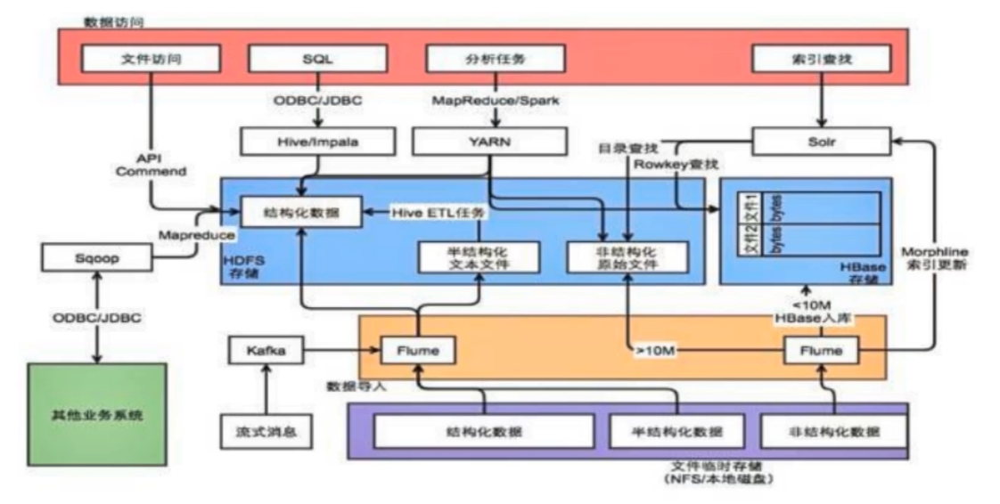
数据采集介绍
ETL基本上就是数据采集的代表,包括数据的提取(Extract),转换(Transform)和加载(Load)。
数据源是整个大数据平台的上游,数据采集是数据源与数仓之间的管道。
在采集过程中针对业务场景对数据进行治理,完成数据清洗工作
数据源复杂、多样,包括业务数据库、日志数据、图片、视频等多媒体数据等。
数据采集形式也需要更加复杂,多样,包括定时、实时、增量、全量等。
常见的数据采集工具也多种多样,可以满足多种业务需求
数据采集场景
- 场景1:从支持FTP,SFTP,HTTP等协议的数据源获取数据
- 场景2:从业务数据库获取数据,数据采集录入后需支撑业务系统
- 场景3:数据源通过Kafka等消息队列,需要实时采集数据
数据采集系统需求
- 数据源管理与状态监控
- 定时、实时、全量、增量等多模式的数据采集及任务监控
- 元数据管理、数据补采及数据归档
常用的数据采集工具
Sqoop:常用的关系数据库与HDFS之间的数据导入导出工具,将导入或导出命令翻译成MapReduce程序来实现Apache
Flume:分布式、可靠的、高可用的日志收集系统,支持多种数据来源,配置灵活
Datax:阿里开源的异构数据源同步工具,致力于实现关系数据库、HDFS, Hive, HBase, FTP等异构数据源的稳定数据同步
Sqoop
用于在Hadoop和传统的数据库(Mysql, Postgresql等)进行数据的传递。
可以通过Hadoop的MapReduce把数据从关系型数据库中导入到Hadoop集群。
传输大量结构化或半结构化数据的过程是完全自动化的。
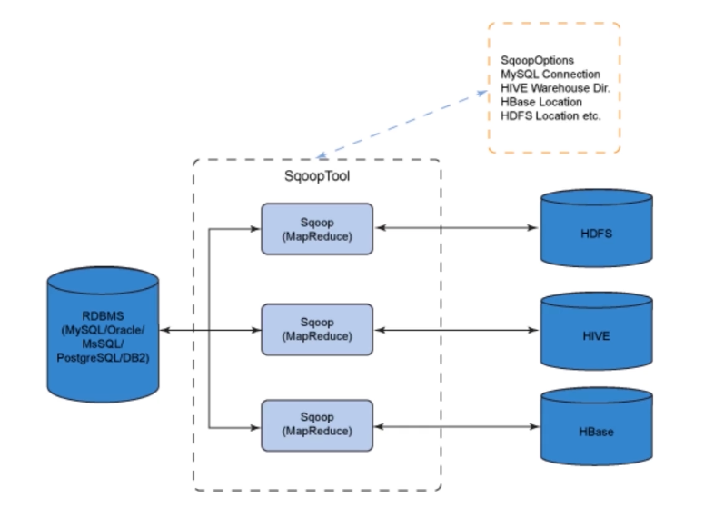
Sqoop Import流程：
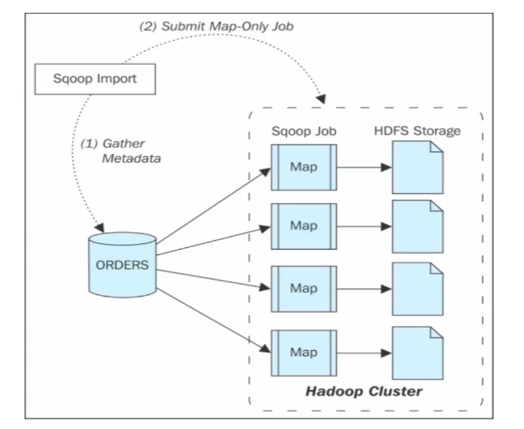
- 获取源数据表的MetaData信息
- 根据参数提交MapReduce任务
- 表内每行作为一条记录,按计划进行数据导入
Sqoop Export流程：
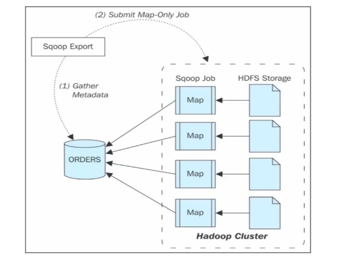
- 获取目标数据表的MetaData信息
- 根据参数提交MapReduce任务
- 对HDFS文件内每行数据按指定字符分割,导出到数据库
Flume
Flume是一个分布式的对海量日志进行采集,聚合和传输的系统。
Flume系统分为三个组件,分别是source,sink,channel。
Flume允许用户构建一个复杂的数据流,比如数据流经多个agent最终落地。
示意图1：
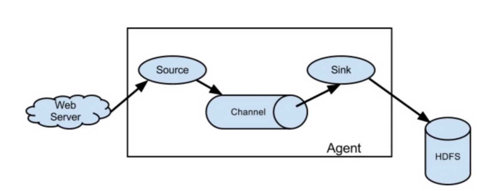
示意图2：
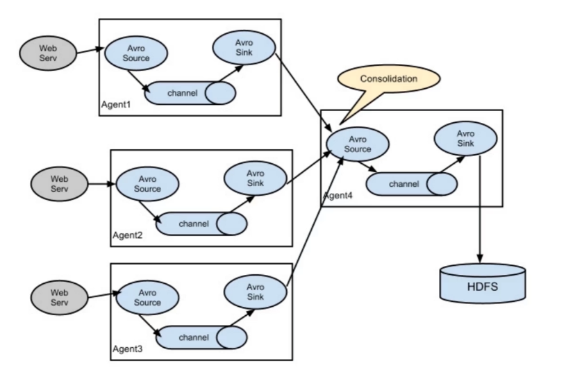
示意图3：
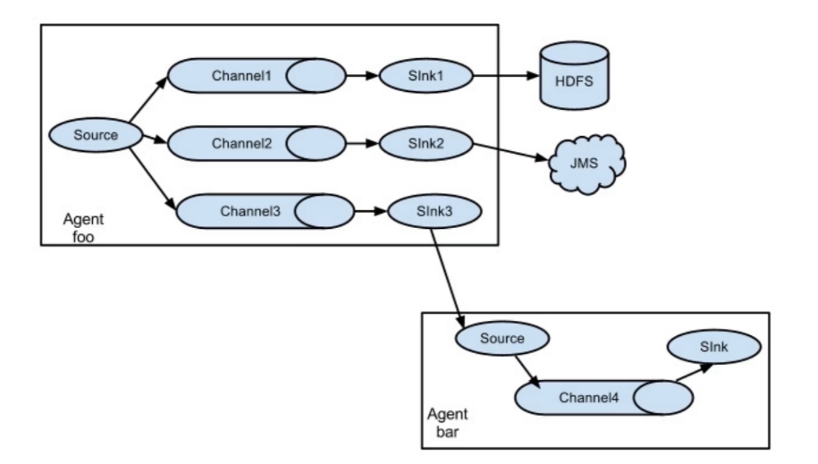
DataX
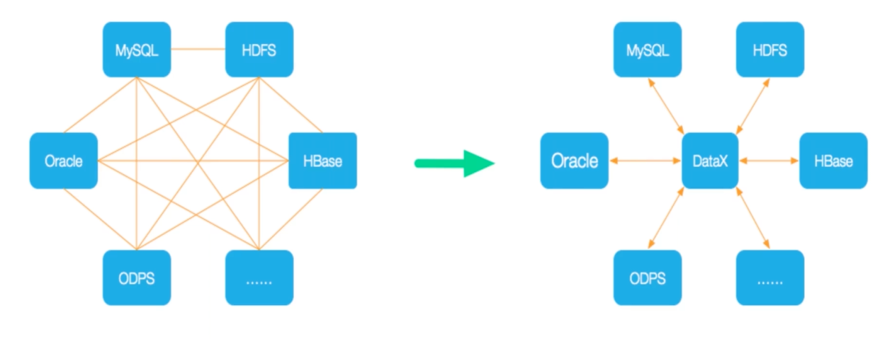
Datax是一个异构数据源离线同步工具。
实现包括关系型数据库(MySQL、Oracle等)、HDFS、Hive、ODPS、HBase、FTP等各种异构数据源之间稳定高效的数据同步功能。
将复杂的网状的同步链路变成了星型数据链路,有良好的扩展性。
架构：
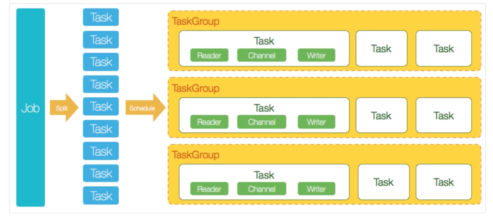
数据治理
数据所面临的问题
- 相比传统数仓大数据时代数据更加多样、更加复杂、数据量更大
- 随处可见的数据不统一、难以提升的数据质量、难以完成的数据模型梳理
- 多种采集工具、多种存储方式使数据仓库or数据湖变成数据沼泽
数据治理解决的问题
- 数据不可知:用户不知道有哪些数据、不知道数据和业务的关系
- 数据不可控:没有统一的数据标准,数据无法集成和统一
- 数据不可取:用户不能便捷的取到数据,或者取到的数据不可用
- 数据不可联:数据之间的关系没有体现出来,数据深层价值无法体现
数据治理目标
- 建立统一数据标准与数据规范,保障数据质量
- 制定数据管理流程,把控数据整个生命周期
- 形成平台化工具,提供给用户使用
数据治理
- 数据治理包括元数据管理、数据质量管理、数据血缘管理等
- 元数据管理：数据的库表结构等schema信息；数据存储空间、读写记录、权限归属及其他各类统计信息
- 数据血缘管理：数据之间的血缘关系及生命周期；数据的业务属性信息和业务数据模型
- 数据治理在数据采集、数据清洗、数据计算等各个环节
- 数据治理难得不是技术,而是流程、协同和管理
数据治理步骤
- 统一数据规范和数据定义，打通业务模型和技术模型
- 提升数据质量，实现数据全生命周期管理
- 挖掘数据价值,帮助业务人员便捷灵活的使用数据
数据治理与周边系统
- ODS, DWD, DM等各层次元数据纳入数据治理平台集中管理
- 数据采集及处理流程中产生的元数据纳入数据治理平台,并建立血缘关系
- 提供数据管理的服务接口,数据模型变更及时通知上下游
数据治理工具
- Apache Atlas: Hortonworks主推的数据治理开源项目
- Navigator: Cloudera提供的数据管理的解决方案
- WhereHows: LinkedIn内部使用并开源的数据管理解决方案
Apache Atlas数据治理
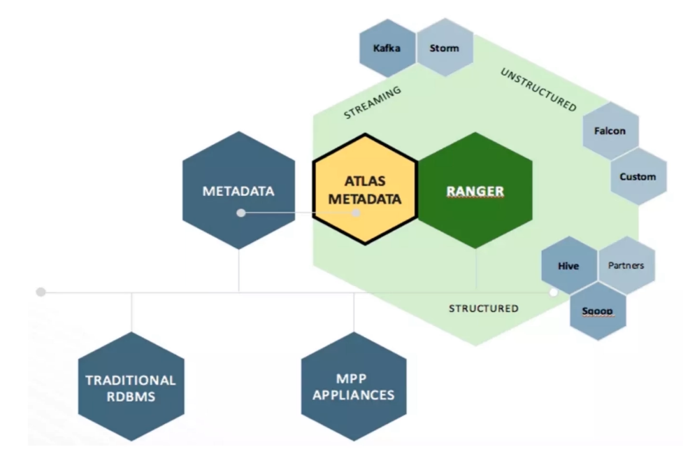
- 数据分类:自动捕获、定义和注释元数据,对数据进行业务导向分类
- 集中审计:捕获所有步骤、应用及数据交互的访问信息
- 搜索与血缘:基于分类和审计关联数据与数据的关系,并通过可视化的方式展现
架构：
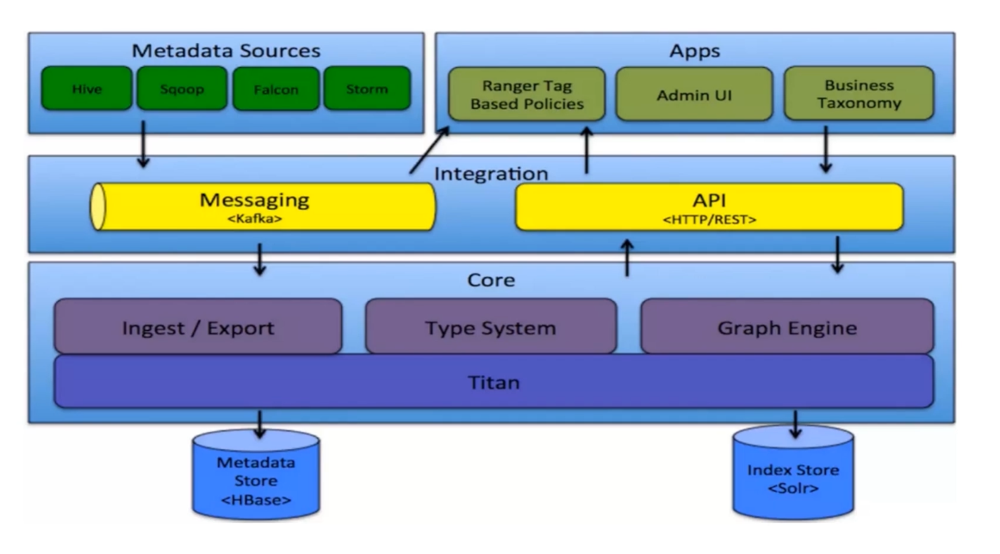
- Type System:对需要管理的元数据对象抽象的实体,由类型构成
- Ingest\Export:元数据的自动采集和导出工具, Export可以作为事件进行触发,使用户可以及时响应
- Graph Engine:通过图数据库和图计算引擎展现数据之间的关系
元数据捕获
- Hook:来自各个组件的Hook自动捕获数据进行存储
- Entity:集成的各个系统在操作时触发事件进行写入
- 获取元数据的同时,获取数据之间的关联关系,构建血缘